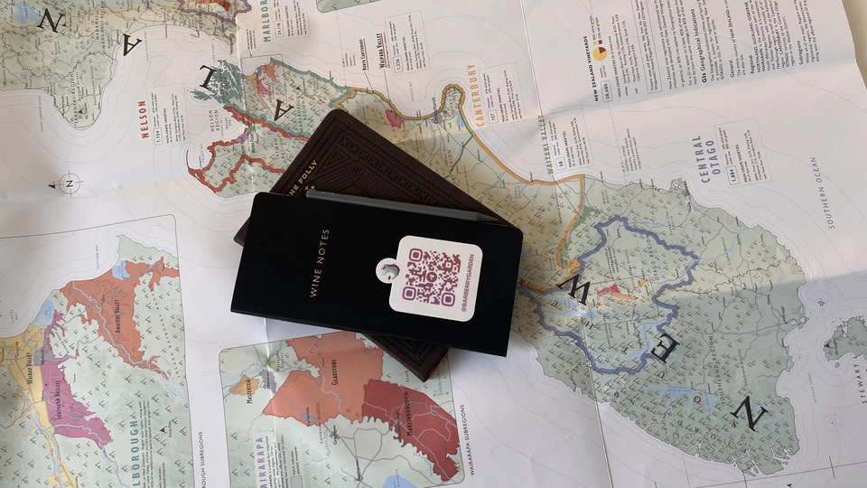

Monthly report - August 2022

It’s funny how much is dictated by nature and its mood. Today is incredible weather, so I am listening to the Antirăzboinică album by Valeriu Sterian and looking forward to a new month. Yet it’s interesting to look back before making the next step. So here I am, writing a new monthly report. And here you are, reading it.
Was this month active? Yes! But in a lazy fashion. In total, I consumed 98 wines and rated only 77 of them (with two repeats). What else? Two wine tasting events and three informal gatherings (all big enough to get me drunk) behind, and many evenings lulled by white wines. That explains the number of consumed wines. Yet as you can see, I rated 11 wines less this month.
Novelties
- 7.8 Coulee de Serrant Clos de la Bergerie 2017 is my first Savennières-Roche-aux-Moines AOC. Loud name with a corresponding price tag. Yet I am not disappointed as I had no expectations. Do I recommend it? No. Consider me a peasant.
- 7.4 Alberto Oggero Roero Arneis 2018 is my first mono Arneis and my first white Roero DOCG. I am still struggling to find great wine from this region.
- 8.2 Victoria E. Torres Pecis Sin Titulo NG 2017 is my first Negramoll. This wine is incredible. Open its page to read why it has no name. Update: turns out, it’s a synonym of Tinta Negra Mole. Yet, it’s my first non-fortified wine made of this grape.
- 7.4 Frontonio Telescópico Garnacha 2017 is my first Garnacha peluda and my first IGP Valdejalón.
- 7.4 Celler del Roure Parotet 2017 is my first Mandó and Arcos.
- 7.5 Bimbache Vinicola Tinto El Hierro 2018 is my first Vijariego Negro and my first El Hierro DO. The experience was fun, and I enjoyed it. Though, in general, people had mixed feelings about it. Update: turns out, it’s a synonym of Sumoll, so not a novelty.
- 7.0 Linar Winery Code: Miss Mavrud 2021 is my first Mavrud and my first Bulgarian wine. I can’t say anything bad or good.
- 7.7 J.M Dreyer Origin Sylvaner Macération 2020 is my first macerated Silvaner. So far, I enjoy wines by J.M Dreyer and am curious to taste more.
- 7.2 Les Vignes De Paradis Pinot Gris M… 2019 is my first Vin Des Allobroges IGP. And if my notes do not let me down, it’s also my first macerated Pinot Gris. So far I am not a fan of Les Vignes De Paradis. I know it might be caused by my poor choice as Dominique Lucas is famous for Chasselas. Yet this is where I stand today.
- 7.2 Gérard Bertrand An 825 Crémant de Limoux Brut 2019 is my first Crémant de Limoux AOC, you know, the place that some consider to be a ‘birthplace’ of sparkling wines. At least, according to French Wiki, which links to the old version of the official Limoux AOC site. Go figure. Instead, I prefer to enjoy good bubbles.
- 7.4 Bava Ruché 2019 is my first Ruchè di Castagnole Monferrato DOCG. And IMO there are better wines made of this grape, especially in this price range.
- 7.0 Gérard Bertrand An 1618 Picpoul de Pinet 2019 is my first Picpoul and my first Picpoul de Pinet AOC.
It may sound like I am a meanie. But I am not! Believe me or not (and you better do), this month’s average rating is 7.652 (and that’s 0.1986 higher compared to the previous month). It’s just that the novelties this month are not so exciting (apart from the excitement I get from tasting something new).
Favourites
Traditionally, preparing a list of my favourites is a tough task to accomplish. I try to avoid listing wines based solely on my scores (you can do it yourself by sorting the table below). Instead, I try to pick wines that really stood out for me. So this month my favourites are the following bottles.
- 8.5 Victoria E. Torres Pecis Sin Titulo NG 2017 is my favourite red wine of the month. It is beautiful, complex and full of character. And it doesn’t cost all the money! In my opinion, this wine is an incredible bargain.
- 8.0 Ca’ di Mat Andrinal 2017 is another favourite red of the month but more affordable (e.g. in the category ‘below $20’). Among the Top 5 wines sorted by QPR. Made by skilful winemakers that are also responsible for Fedellos do Couto and Peixes. I had to buy more.
- 8.2 Patrick Sullivan Baw Baw Shire Chardonnay 2019 is my favourite white of the month. Yes, I am biased when it comes to this region, but Baw Baw Shire Chardonnay brings so much enjoyment to my heart and brain that I can’t resist!
- 8.0 Marco de Bartoli Vignaverde 2019 is another favourite white of the month but more affordable (e.g. in the category ‘below $20’). Among the Top 5 wines sorted by QPR. It is an incredible Grillo with great QPR. Clean, precise and delicious. A few sips ended with me buying more bottles.
- 8.0 Denavolo Dinavolino 2020 is my favourite macerated white of the month. And it’s also refreshingly good compared to previous vintages. With the current price, I consider it to be a great bargain.
This month I have no favourites among sparkling wines. Yet there are some honourable mentions (including some bubbles).
- 7.5 Alex Craighead Kindeli Verano 2020 is a strange wine to appear here. All my previous experience with Alex Craighead wines was shitty. I still don’t fully understand why I decided to give it a try, but I was pleasantly surprised. Let’s say Kindeli Verano 2020 is the redemption of the month.
- 8.5 An Approach To Relaxation Sucette 2018 is a delicious red made of Grenache planted somewhere between 1860 and 1880 mixed with 90 years old Grenache. Maybe it’s too developed, but I can’t miss an opportunity to shoot out this otherwise beautiful wine.
- 8.0 Markus Molitor Wehler Klosterberg Pinot Blanc 2017 is a white with a sophisticated bouquet that combines moss-covered pebbles and mushrooms in the same glass (apart from citrus and fruits). Together with its acidity and balance, I found this Pinot Blanc fascinating.
- 7.5 Tholomies Crémant de Limoux Brut NV is a not a blockbuster or a life changing bubble. It’s just a well made Crémant de Limoux AOC for a decent price.
Outcasts
This one is simple. And I beg you to put away your rotten tomatoes.
- 5.5 Beykush Chardonnay Reserve 2019 is the worst wine I tasted this month. And I tasted it blind! I was not expecting it to pop up that evening. They say the bottle was spoiled, but I don’t buy it. I even checked all my notes on every other Beykush wine I tasted, and I found only one decent score - Beykush Arbina 2017 with 7.5. I don’t understand the hype around this winery.
- 6.0 Weingut Edgar Brutler Saito 2018 was also bad. Not sure what happened here. Usually, Edgar Brutler wines are simple but good. This time it had a foul smell. I was the only one disturbed by it, so 🤷.
- 7.25 Les Vignes De Paradis Pinot Gris M… 2019 wasn’t bad per se. In my opinion, it doesn’t deserve all the hype around it. My plan is to taste some other macerated Pinot Gris to understand how this combination works.
- 7.25 I Vigneri Aurora 2019 is a wine I wished to taste for some time. I’ve heard many good words about the producer and this particular wine. But then I had this blind tasting, and I genuinely was disappointed when the bottle was revealed. I know it happens. That’s why we have blind tastings.
- 7.4 Jauma Audrey’s Fairygarten 2018 is a case where I expected more than I should’ve. My expectations were based on James Erskine’s story and the fact that this wine is made in Adelaide Hills (even though the grapes are sourced from McLaren Vale). Though, I am open to tasting other wines by Jauma.
I think it’s enough. Overall this month was good, so I have nothing to add.
Countries
Every month my top 3 rated countries stay the same. The only thing that changes is the order. So I am more interested in the countries that come below. And the first one is Australia, with an incredibly high average score of 8.03. I guess this is the best illustration of my love for Adelaide Hills.
I am happy to see România and Bulgaria on this list. But having only one wine from New Zealand makes me sad. I was planning to drink more NZ wines this month, yet you see how badly this plan was executed.
Vintages
This month the oldest vintage is 2014. And guess what! In both cases, it was sparkling by Cà del Vént. And while the graph below shows some nice distribution, I want to emphasise one small detail - this month I rated wines of all vintages starting with 2014.
According to my notes, the best vintage in terms of highest average score and QPR is 2017 - 7.84 (excluding 2014, which is not representative because of those gorgeous sparklings).
Grapes
Of course, August was not as festive as July in terms of grapes. This time only 67 grapes vs 82 in the previous month. Yet there are novelties: Negramoll, Mandó, Arcos, Vijariego Negro, Garnacha peluda, Mavrud, and Picpoul. Seven new grapes? I call it a success.
Besides novelties, I am happy to see some other rather rare grapes. Like Ruchè, Grenache Gris, Auxerrois blanc, Listán Negro, and some others. Also, it’s hilarious that Chardonnay and Pinot Noir are constantly at the top of this list.
All ratings
Final words
August was a lazy month for me. It is an obvious conclusion that one might come to by looking at the content and site changes over the last 31 days. Yet I have many plans for the upcoming month.
- Slightly rehaul the front page and add more information about this site (including the ‘how to use it’ section).
- Post a new installation of Site Updates.
- Throw three wine-tasting events (already announced), meaning three reports to post.
- Continue my work on a super secret project - Companion App.
That’s enough work for me considering Barberry Garden is a hobby project. In any case, I hope you find it exciting. Let me know what you think, and what content you would love to see here. You can contact me via email or telegram.